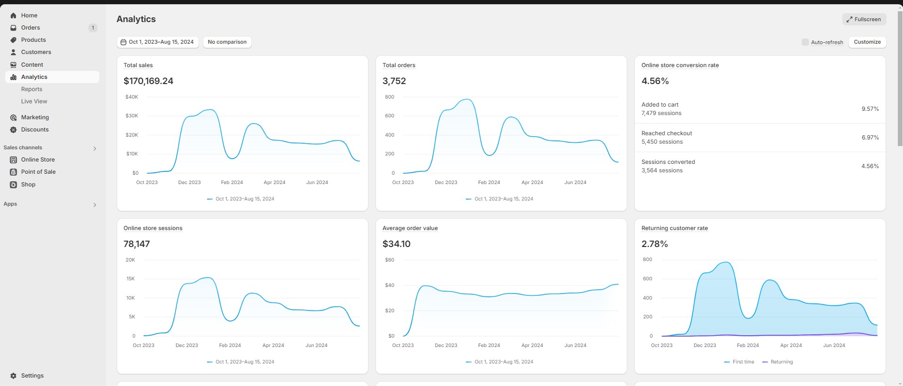

E - commerce Retailer
Sydney, Australia (Sep 2023 - Present)
I started my small business in September 2023, selling foot accessories in Australia. I handle every aspect of the business, from managing the online store and optimizing the user interface, managing inventory, imports, product packaging, and customer service.

Store Optimization: I take product photos, run and optimize the store, and implement SEO best practices to improve organic search. This has helped me achieve a strong store conversion rate of 4.56%, well above the e-commerce average of 2.5% to 3%.
Digital Marketing & Advertising: I run targeted ad campaigns on Facebook and Google to drive traffic and sales. I also launch Klavyo email campaigns and flows to recover abandoned checkouts and attract more customers.
Customer Experience & Optimization: I use A/B testing and analytics tools to enhance the customer experience and collect reviews to build trust with new customers.
Product Development & Management: I develop new products and improve existing ones based on customer feedback.
Order Packaging: I personally pack and ship orders daily to minimize fulfillment time, which helps reduce the return rate. Out of 3,700 orders, only 12 have been returned.
Goals for the Year: My aim is to reach 10,000 orders, raise my conversion rate to 5%, and increase the returning customer rate to 10%.